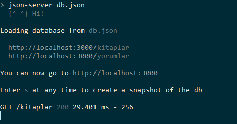
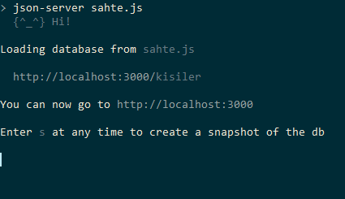

NodeJS’de json-server ile REST API Geliştirme
Rest API artık yazılım dünyasının vazgeçilmezleri arasında. Öyle ki iş ilanlarında sadece REST API yazacak kişiler aranıyor yazmakta.
Bu kadar popüler olan bir konunun da elbet ki işleri kolaylaştıran araçları olmalıdır. Siz bir kolaylık arıyorsanız elbette bu kolaylığı sizin için sağlayacak kişiler de oluyor.
Bu kolaylıklardan birisi de NodeJS çatısı altında çalışan json-server. json-server size basit sahte fake rest api geliştirme imkanı sağlıyor. Bunu hemen hemen hiç kod yazmadan yapmanıza imkan tanıyor. Sahte bir api dedik ancak eğer sağlanacak değerler belirli yani statik ise bu sahte olmaktan çıkıp sizin gerçek dünya uygulamanızda da yer alabilir. İsterseniz json-server kurulumunu gerçekleştirip bir örnek uygulama yapalım. Böylece daha iyi anlaşılır. Kurulum Kurulum npm üzerinden gerçekleşiyor.
npm install -g json-server
Burada -g flag’i indirilen kütüphanenin executable yani çalıştırılabilir olmasına imkan sağlıyor.
Kurulum işleminden sonra ilk basit uygulamamızı yapalım:
Uygulamamız basit olarak kitaplar hakkında bilgi sağlayan bir uygulama olacak. Kitap Adı ve Yazarını ayrıca yorumlarını da sunacak. Bu bilgileri de bir json dosyasında tutacak. Dosya adı db.json olsun.
{ "kitaplar": [ {"id": 1, "kitap": "Suç ve Ceza", "yazar": "Fyodor Dostoyevski"}, {"id": 2, "kitap": "Savaş ve Barış", "yazar": "Lev Tolstoy"}, {"id": 3, "kitap": "Yevgeni Onegin", "yazar": "Aleksandr Puşkin"} ], "yorumlar": [ {"id": 1, "yorum": "Çok güzel bir kitap", "kitapID": 1}, {"id": 2, "yorum": "Okurken zevk aldım", "kitapID": 2}, {"id": 3, "yorum": "Okumadan ölmeyin derim", "kitapID": 3} ] }
Bu basit örnekte 3 adet kitap ve her kitap için de birer yorum var. Bu işlemden sonra şu komutu db.json dosyasının olduğu dizine girerek verelim.
json-server db.json

Fark ettiyseniz bize iki adet link gösteriyor. Ben bu yazıyı yazarken görselin altında gördüğünüz URL’yi açtım. Ancak kitaplar URL’si de açılabilir. Kitaplar URL’si
http://localhost:3000 adresinde yayın yapıyor. Bunu sunucunuzda nasıl kullanacağınız sizin işiniz.
Biz kitaplar sayfasını açtık ve şöyle bir çıktı ile karşılaştık:
[ { "id": 1, "kitap": "Suç ve Ceza", "yazar": "Fyodor Dostoyevski" }, { "id": 2, "kitap": "Savaş ve Barış", "yazar": "Lev Tolstoy" }, { "id": 3, "kitap": "Yevgeni Onegin", "yazar": "Aleksandr Puşkin" } ]
Bunlar bizim yazdıklarımız yani senaryoya göre veritabanında var olan veriler. Bu verileri direkt bu URL’i açtığımız gibi görebiliriz. Ancak bizim için bu verileri özellikle çekmek yani bir bakıma query ile çekmek daha önemli. Evet buna da imkan sağlıyor. Örneğin ID’ye göre çekecek olsaydık
http://localhost:3000/kitaplar/1
Bu bize 1 numaralı ID’ye sahip olan kitabı getirecekti. Eğer ID’ye göre değil de kitap adına göre veri çekecek olsaydık da şöyle yapacaktık:
http://localhost:3000/kitaplar?kitap=Yevgeni Onegin
O zaman gelin uygulamamızı biraz daha genişletelim. Bir yazar için birden fazla kitap girişi yapalım. Yeni bir kitap ekledik. Yine bir Dostoyevski kitabı olan Karamazov Kardeşler kitabını ekledik. Artık data dosyamız şöyle:
[ { "id": 1, "kitap": "Suç ve Ceza", "yazar": "Fyodor Dostoyevski" }, { "id": 2, "kitap": "Savaş ve Barış", "yazar": "Lev Tolstoy" }, { "id": 3, "kitap": "Yevgeni Onegin", "yazar": "Aleksandr Puşkin" }, { "id": 4, "kitap": "Karamazov Kardeşler", "yazar": "Fyodor Dostoyevski" } ]
Şimdi artık bir yazarın iki adet kitabı var. O zaman yazar adına göre aratalım. Arama URL’si bildiğiniz üzere şöyle olacak:
http://localhost:3000/kitaplar?yazar=Fyodor Dostoyevski
Sanırım tam da istediğimiz bu. Bize sadece seçili olan yazara ait kitapları sıraladı.
[ { "id": 1, "kitap": "Suç ve Ceza", "yazar": "Fyodor Dostoyevski" }, { "id": 4, "kitap": "Karamazov Kardeşler", "yazar": "Fyodor Dostoyevski" } ]
Konsol ekranında klavyeden s tuşuna basarak db’nizin bir snapshot’ını alabilirsiniz. Daha da farklı olarak yine npm kütüphanelerinden faker ve lodash kullanılarak internet üzerindeki kullanıcıların bilgileri alınarak sahte bir veritabanı oluşturabiliriz. Bunun için faker ve lodash kurulumunu yapmamız gerekmekte.
npm install faker lodash
Kurulumdan sonra bir adet JS dosyası oluşturalım. Bu dosyanın adı sahte.js olsun. Bu andan sonrası NodeJS bilenler için daha kolay olacak. Modülleri js dosyamıza aktaralım.
module.exports = function(){ var sahte = require("faker"); var _ = require("lodash"); }
Bu aktarım işleminden sonra Faker api’larını kullanalım. Faker size hangi API’ları sağlıyor öğrenmek istiyorsanız Faker dökümanına bakın
lodash kütüphanesinin times fonksiyonunu kullanarak şu işi şu kadar defa yap diyoruz. Burada biz 20 kişilik bir veritabanı oluşturacağız. Bu veritabanı aslında gerçekte internette var olan ama veritabanına kendileri tarafından eklenmemiş sahte hesapların verilerini sunuyor bize.
Bunu yaparken faker kütüphanesinin 4 adet özelliğinden faydalanacağız. Bunlar
userName() => internette kullanıcı adı arar.
findName() => internette isim arar.
lastName() => internette soyad arar.
avatar() => internette profil resmi arar.
Bu kısa bilgilerden sonra javascript dosyamız şöyle oldu.
module.exports = function(){ var sahte = require("faker"); var _ = require("lodash"); return { kisiler: _.times(20, function(n) { return { id: n, kullanici: sahte.internet.userName(), isim: sahte.name.findName(), soyad: sahte.name.lastName(), resim: sahte.internet.avatar() } }) } }
Şimdi tekrar json-server’ı çalıştıralım ve bakalım:
json-server sahte.js

Gördüğümüz üzere artık yeni bir veritabanı oluştu. Bunu yine
http://localhost:3000 adresine giderek anlayabiliriz. Bu arada bu adresteki varsayılan anasayfayı boş index.html dosyası ile değiştirebilirsiniz. Eğer ki o bölge hoşunuza gitmiyorsa.
Yeni REST API sayfamız artık bu adreste http://localhost:3000/kisiler
Ayrıca database yapınıza da bakabilirsiniz. Bunun için http://localhost:3000/db adresine girmeniz yeterli. Örneğin şu anki uygulamamız şöyle bir çıktı veriyor bize:
[ { "id": 0, "kullanici": "Leonie_Padberg76", "isim": "Liza Will", "soyad": "Satterfield", "resim": "https://s3.amazonaws.com/uifaces/faces/twitter/robturlinckx/128.jpg" }, { "id": 1, "kullanici": "Harmon.DuBuque", "isim": "Sincere Nicolas", "soyad": "Gottlieb", "resim": "https://s3.amazonaws.com/uifaces/faces/twitter/magugzbrand2d/128.jpg" }, { "id": 2, "kullanici": "Sylvester29", "isim": "Alexzander Harris", "soyad": "Hegmann", "resim": "https://s3.amazonaws.com/uifaces/faces/twitter/jydesign/128.jpg" }, ]
Burada bir isim yapalım. Yine URL şöyle olacak:
http://localhost:3000/kisiler?isim=Alexzander Harris
Bu adres bize Alexzander Harris ismindeki kişinin bilgilerini veriyor. Bilgiler ise şunlar:
[ { "id": 2, "kullanici": "Sylvester29", "isim": "Alexzander Harris", "soyad": "Hegmann", "resim": "https://s3.amazonaws.com/uifaces/faces/twitter/jydesign/128.jpg" } ]
Faker kullanarak daha bir sürü bilgi çekebilirsiniz. Unutmadan söylemek gerekiyor. Faker kullanarak yazılan uygulamalar için de snapshot alabilirsiniz. Ancak bu uygulamalarda veritabanı internetin ta kendisi yani local bir veritabanı yok.
Ayrıca json-server size tüm HTTP imkanlarını sağlıyor. (GET, POST, PUT, PATCH ve DELETE)
Daha fazla bilgi için ve json-server’a katkı yapmak için GitHub sayfasına bakabilirsiniz:
json-server: https://github.com/typicode/json-server
Anlatım bu kadardır. Bu kısa makalede kendimiz için bir REST API yazdık. Hem de hiç zorlanmadan.
İyi çalışmalar.
Comments
Comments powered by Disqus